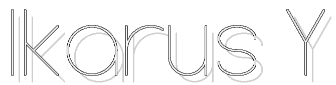
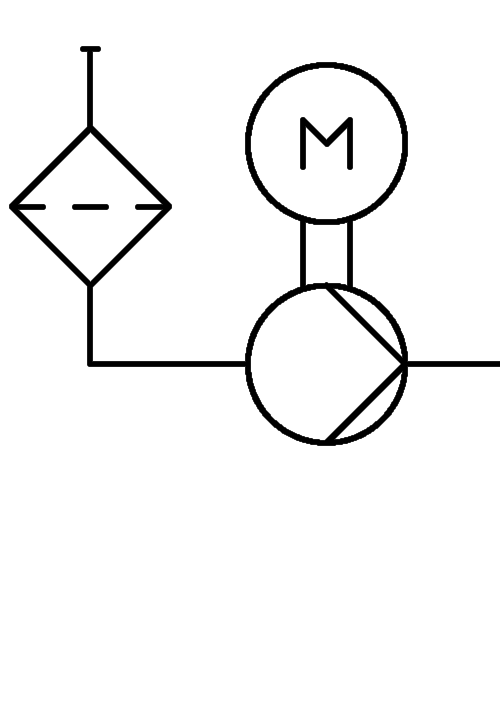
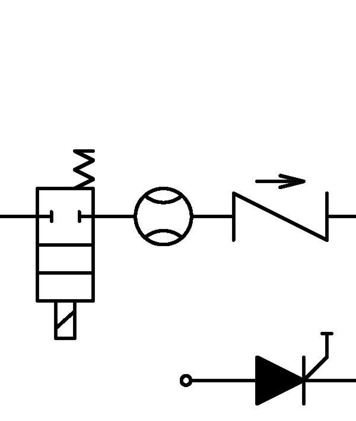
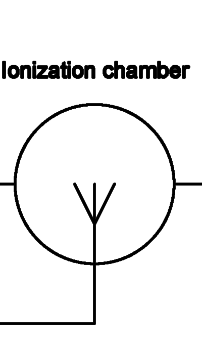
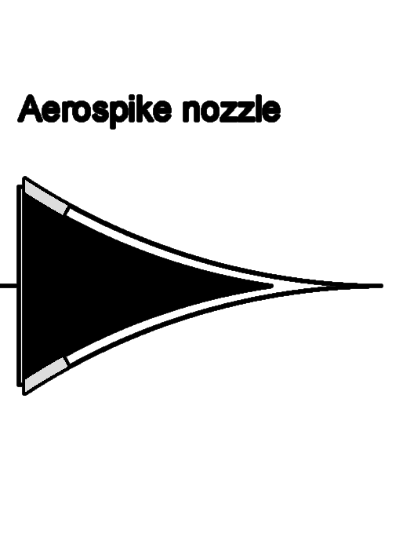

Designed and engineered by
NikitoDos
.
Script Edge Resources
Guida alla compressione audio digitale Lossless e Lossy
Guida alla compressione video digitale
Le Central Processing Units (CPUs)
Montare un PC
Principi di elettronica
Semiconduttori, diodi e transistor
Starseeker Modular Telescope
Ikarus-Y Remote Control Panel
Engineering section
Temperature
Gears
27.5 °C
OFF




Altitude
Speed
0.52 M
30.72 kts
Navigation section
Position
Time of Flight
Stability of Flight
Remote Control
45.185278° N - 9.150000° E
T + 9.50 min
OK
OK